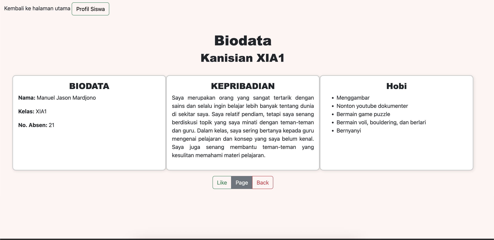

Website Biodata Diri
Presentasi Identitas Personal Secara Digital
Proyek ini adalah portofolio pribadi pertama saya yang dirancang dengan konsep minimalis. Tujuan utamanya adalah menampilkan informasi diri seperti identitas, kepribadian, dan hobi dalam format yang lebih interaktif dibanding biodata konvensional. Saya menggunakan teknik box-shadow dan border-radius pada CSS untuk memberikan kesan kedalaman pada setiap panel informasi.
Saya membagi konten menjadi tiga bagian utama agar pembaca bisa fokus pada satu informasi dalam satu waktu. Selain itu, saya juga menambahkan tombol interaktif di bagian bawah sebagai sarana bagi pengunjung untuk memberikan apresiasi atau sekadar kembali ke halaman sebelumnya dengan mudah.
Meskipun sederhana, proyek ini menjadi landasan penting bagi saya dalam memahami konsep user interface yang bersih dan penggunaan ruang (white space) yang efektif.